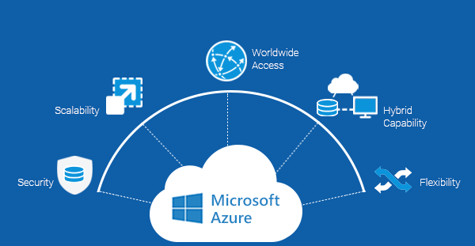
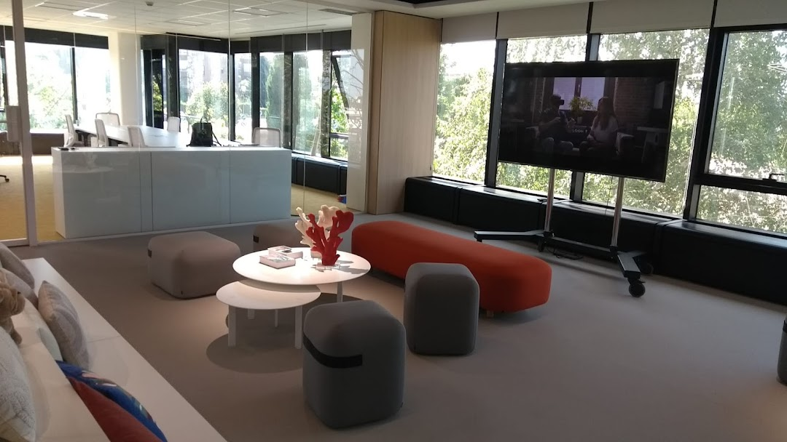

Infraestructura
Mantenimiento de sistemas, servidores, redes y servicios críticos con enfoque preventivo.
SysAdmin + Desarrollo Web
Soy Gonzalo Victoria. Combino administración de sistemas, soporte técnico y desarrollo web para resolver problemas reales: desde redes y servidores hasta sitios corporativos que convierten mejor.
Soy un perfil técnico híbrido orientado a ejecución: administro infraestructura, doy soporte y también desarrollo soluciones web cuando el negocio lo necesita. Mi foco está en fiabilidad, claridad y mejora continua.
Mantenimiento de sistemas, servidores, redes y servicios críticos con enfoque preventivo.
Diseño y construcción de webs corporativas claras, rápidas y alineadas con objetivos reales.
Resolución de incidencias, automatización de tareas y propuesta de mejoras técnicas sostenibles.
Selección de proyectos con impacto real en negocio y operación.
Administración de sistemas y soporte técnico en entorno educativo con operación diaria crítica.
Ver proyecto
Servicios cloud y soporte técnico orientado a continuidad y estabilidad operativa.
Ver proyectoDesarrollo web corporativo para reforzar marca, claridad de servicios y presencia digital.
Ver proyecto
Web de empresa de interim management enfocada en comunicación clara y profesional.
Ver proyectoSi necesitas a alguien que entienda tanto la infraestructura como la parte web, estaré encantado de conocer tu proyecto.